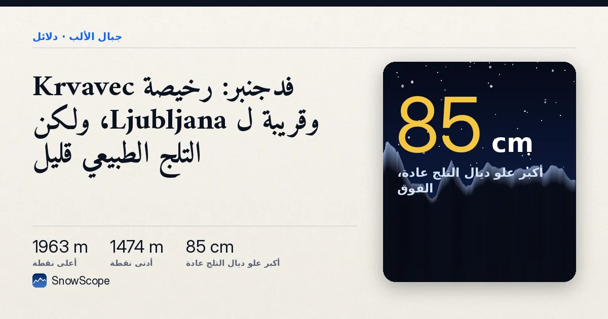

Krvavec فدجنبر: رخيصة وقريبة ل Ljubljana، ولكن التلج الطبيعي قليل
Krvavec كتقعد 20 كم فـ الشمال ديال Ljubljana وتكلف أقل من تقريبا أي محطة أخرى فـ الألب: 47 EUR للنهار، 205 EUR لـ 6 يام. المشكلة هي التلج. فـ نهار عادي فـ 15 دجنبر فـ المنتصف ديال الجبل، الأرض عندها غي 13 سم على حساب سجل 46 شتوة ديالنا، و فـ 11 منهم كانت الأرض بيضا تماما.
شوف توقعات التلج مباشرة ديال Krvavec فالتطبيق ديال SnowScopeالعلو ديال التلج، التنبيهات والخريطة 3D، فابور.
علاش Krvavec كتعجب الناس فـ أول الموسم
المحطة كتوصل لـ 1963 م، شيء محترم بـ السلوفينيا، عندها 13 طيلي و 16 كم ديال البيسطات. للمتزلجين فـ Ljubljana كتاخذ أقل من ساعة ديال الطريق. الأثمان فـ أول الموسم—45 EUR معقود مقدما، 47 EUR السعر الكامل—كتغري الناس واحد الوقت ديال ما يقع التلج الأول فـ الواد. لكن Krvavec كتقعد على الحافة الشمسية الجنوبية ديال الألب، فـ البرد ديال دجنبر ضعيف والتلج لي كيقع غالبا كيدوب.
الارتفاع لي خريطتو 488 م متواضع، و هادا كيهم بزاف. الأرض فـ الفوق كتحتفظ بـ التلج أطول، لكن المنتصف ديال الجبل فـ 1718 م هو لي كيقضي فيه أغلب المتزلجين الوقت ديالهم، و هنا هو لي التاريخ كيخرج الموضوع.


التلج ديال دجنبر: الأرقام لي كتهم
فـ 15 دجنبر فـ شتوة عادية، المنتصف ديال الجبل عندو 13 سم. غي 24 % ديال 46 شتوة ديالنا عندهم 30 سم أو أكثر فـ المنتصف بين 15 و 21 دجنبر، و 28 % فـ أسبوع الميلاد. الفوق (1963 م) كيدير أحسن—16 سم عادي فـ 15 دجنبر، 28 % ديال الشتوات عندهم 30 سم بين 15 و 21 دجنبر، 33 % فـ أسبوع الميلاد—لكن كتار ديال المتزلجين ما كيقضيوش اليوم كامل فـ القمة.
الاتجاه كيهبط لـ تحت. العلو ديال التلج فـ دجنبر فـ المنتصف ديال الجبل كان متوسطو 15 سم فـ أول 15 شتوة ديال السجل (1980–81 لـ 1994–95) لكن هبط لـ 4 سم فـ آخر 15 (2011–12 لـ 2025–26). فـ أسبوع الميلاد، 47 % ديال الشتوات القديمة عندهم 30 سم فـ المنتصف ديال الجبل بـ قبالة غي 13 % فـ الأخير. الشتوة اللي فاتو ما كانش فيها تلج طبيعي على 15 دجنبر خاتاك.
واحين ديالك تلقى تلج كافي
النهار الأول العادي فـ 30 سم فـ المنتصف ديال الجبل هو 7 يناير، تقريبا شهر واحد بعد أول الموسم. قبل هادا، Krvavec كتعتمد على التلج الصناعي و التنظيف ديال الربيع. إذا المحطة درات التنظيف ديال البيسطات بـ شي، نهار واحد هنا هو قيمة ممتازة. إذا كنت كتعتمد على التلج الطبيعي، كنت كتعتمد على الحظ.
القاعدة (1474 م) أسواأ: 15 دجنبر عادي عندها غي 10 سم، و 11 ديال 46 شتوة ديالنا شافو أرض بيضا هنا. هادا كيهم إذا دفعة ديال الحار خفقت التلج لي كان قليل اللي قع أول الشهر.
القيمة و علاش معناها فـ الواقع
47 EUR للنهار و 205 EUR لـ 6 يام (معقود مقدما 45 EUR) هي من أرخص الأثمان فـ أوروبا. شد بـ Mölltaler Gletscher لي قريبة فـ النمسا، لي كتكلف 332 EUR لـ 6 يام (سعر أول الموسم 2025–26) و كتقعد فـ 2103 م القاعدة. الجليد عندو 66 سم على 15 دجنبر عادي و 91 % ديال الشتوات عندهم 30 سم فـ منتصف دجنبر. فرق الثمن هذا هو هو فرق التلج.
للمتزلجين لي كيسكنو فـ Ljubljana، الستراتيجية هي سهلة: احجز نهار فـ Krvavec واحين لي تقرير البيست و التلج ديال المحطة كيقول فـ أرض كتزلج، و احجز الجليد لـ أسبوع واحد معقود إذا دجنبر كيهم بـ العطلة ديالك.
علاش كتحزم و علاش كتفقد قبل لي تروح
قبل لي تنفق فـ أسبوع دجنبر فـ Krvavec، قرا تقرير البيست و التلج ديال المحطة كل يوم. التلج الطبيعي غطى المنتصف ديال الجبل مع 30 سم فـ غي 24 % ديال الشتوات ديالنا بـ منتصف دجنبر، شي تقرير من المحطة ديها هو أحسن مرشد فـ ما إذا كان التلج الصناعي و التنظيف درو البيسطات تزلج.
وكالة البيئة السلوفينية كتنشر النشرة ديال الانهيارات الرسمية للمنطقة. إذا كنت كتفكر تاخذ شي البيست بـ بعد ما تقع تلج نادرة، قرا النشرة أول، حتى لو البرد القليل ديال دجنبر هنا كيخرج خطر الانهيارات شي غير عادي.
نصايح للي كيتزلجو
- احجز يوم بـ يوم فـ دجنبر بـ الحري من 6 يام معقودين، إلا إذا كان تقرير المحطة الحي كيقول 30 سم أو أكثر فـ المنتصف ديال الجبل.
- توقع أرض بيضا: فـ 11 ديال 46 شتوة المنتصف ديال الجبل كان أرض بيضا فـ 15 دجنبر، شي فقد تقرير المحطة فـ الصبح ديال اليوم لي كتفكر تروح فيه.
- إذا كان أسبوع تزلج فـ دجنبر ضروري، احجز Mölltaler Gletscher بـ الحري؛ كانت عندها 30 سم أو أكثر فـ 96 % ديال أسابيع الميلاد على حساب 46 شتوة.
- لأيام البيست بـ بعد عاصفة ثلج فـ دجنبر، شور النشرة ديال الانهيارات السلوفينية قبل لي تركب خارج البيسطات المحددة.
على هاد الأرقام
العلو ديال التلج فالمحطات هو أكثر تلج فالجهة الفوقانية فالتاريخ المكتوب؛ هادو تقديرات لمنطقة، ماشي قياس فنقطة وحدة. التوقعات يمكن تتبدل. ديما شوف النشرة الرسمية ديال الانهيارات قبل ما تخرج من البيست.
النشرات الرسمية ديال الانهيارات: ARSO – Slovenian Environment Agency
كيفاش تستاشهد بهاد المقال
للبحث، التعليم ولا الصحافة: الأرقام والرسومات تقدر تعاود تخدم بيهم بحرية تحت CC BY 4.0 مع هاد الاستشهاد.
SnowScope (2026), Krvavec فدجنبر: رخيصة وقريبة ل Ljubljana، ولكن التلج الطبيعي قليل, https://snowscope.app/blog/ar/2026/11/krvavec-december-skiing-ljubljana-honest-snow.html, تشاف ف 2026-11-14
SnowScope (Atlas Labs). (2026, November 14). Krvavec فدجنبر: رخيصة وقريبة ل Ljubljana، ولكن التلج الطبيعي قليل. SnowScope snow reports. https://snowscope.app/blog/ar/2026/11/krvavec-december-skiing-ljubljana-honest-snow.html
BibTeX
@misc{snowscope2026krvavecdecemberskiinglju,
author = {{SnowScope (Atlas Labs)}},
title = {Krvavec فدجنبر: رخيصة وقريبة ل Ljubljana، ولكن التلج الطبيعي قليل},
year = {2026},
month = nov,
howpublished = {\url{https://snowscope.app/blog/ar/2026/11/krvavec-december-skiing-ljubljana-honest-snow.html}},
note = {Published 2026-11-14 20:54 UTC; accessed 2026-11-14}
}· CC BY 4.0 · الطريقة، الداتا والأدوات →
Krvavec: التلج والحرارة حسب العلو، هاد الشتا مقارنة مع اللي فاتت (الأدوات) →
تابع Krvavec
فابور: ميساج ملي يجي التلج، والتوقعات كل صباح.